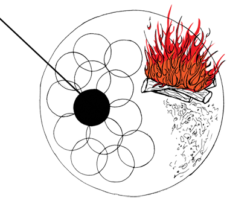
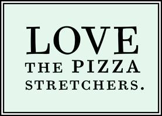

You can sort of measure the heat of the oven when you put a fresh log in both by how quickly it lights up, and then how far the flame curls around the top of the inner dome. If you get black smoke or a circle of flame, it’s hotter than hell, try and keep the floor temp down.
Otherwise, cook at as high a temperature as possible. This is just the way that turns out to be the most fun.
When a pizza is sticky it helps to almost drop the peel on the oven floor and pull it out quickly. The air coming up through the bottom of the peel helps give a little force to get the sticky dough off without catastrophe – one smooth movement.
It helps to divide the sections of the oven floor into different zones that you work within. I always kept the back raging hot incase my floor cooled off, you can drop a pie for a 5 count and have a nicely spotted bottom.
There’s a sweet spot on the oven, especially when you’ve been cooking for a while, usually right inside and to the left, the farthest spot from the fire, where if you drop a pizza you won’t have to touch it, just time it right and take out a perfect cook without a spin.
With the egg pies its always good to keep them closer to the window so you can keep the pizza in the oven without burning every bit of crust before the egg is cooked. This is connected to dividing the sections of the oven into zones.
Always keep the pizzas in motion; if the pie is touching your peel it should never stop moving.
The force of the fire is really quite incredible, so to aim the lightest parts of the crust directly at the flame is the best way to maintain control over a consistent crust.
If the bottom of the pie is finished but the crust or the top isn’t, hold the pie up off the ground with the peel, the higher the hotter.
It’s important to clean the oven with care. This is like brushing a horse or something. Maintaining the object attaches you to it in some way, to treat it with care has an effect on the way you cook.
It’s important to sort of communicate with the oven. It seems to tell you what it needs if you pay attention to how it changes. It’s a breathing organism.
Pet the beast on its head, where the smoke rises from the window and goes up into its skull, this is one reason it resembles a blind beast, it has no eyes.